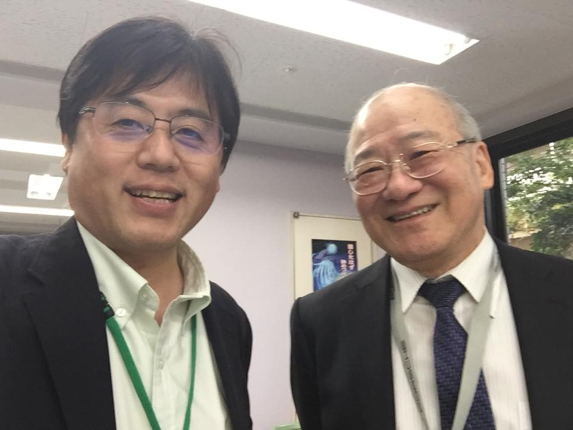

[ファイルサイズ=0.000393MB]

こんにちは。講師の中島俊治（なかしま・しゅんじ）です。
本学の非常勤講師（Webプログラミング・Webアニメーション）の他、サイバー大学准教授、他3校でWebの授業を行っています。
もともと岡山県出身です。東京志向があって「SoftBank」「Yahoo! JAPAN」などのベンチャ企業から大学の教員になった少々変わった経歴の持ち主です。
現在やむを得ず遠隔での授業ですが、7月に対面授業ができることを祈りながら、そのための基礎知識を5-6月に身に着けていきましょう。
どうぞよろしくおねがいします。